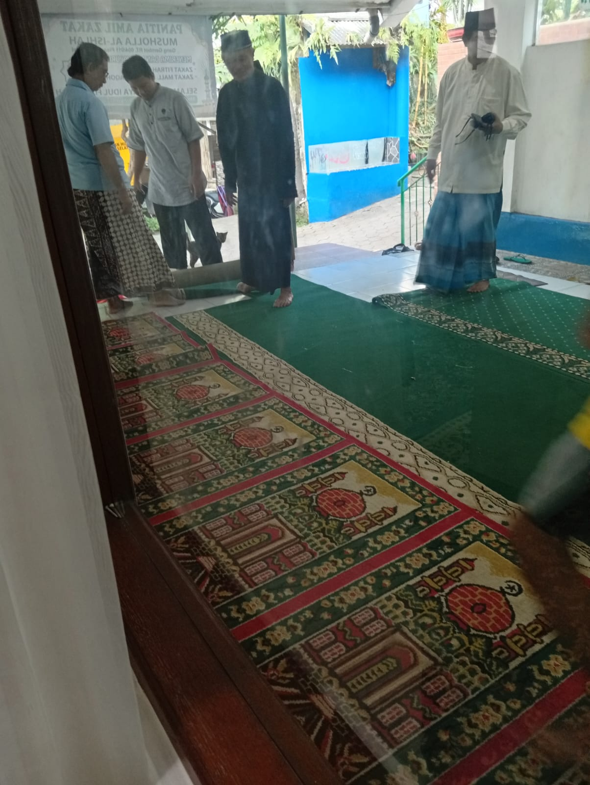
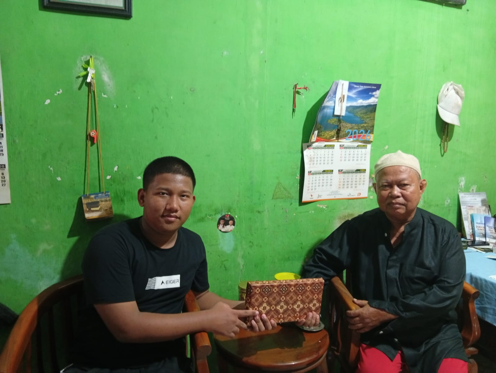
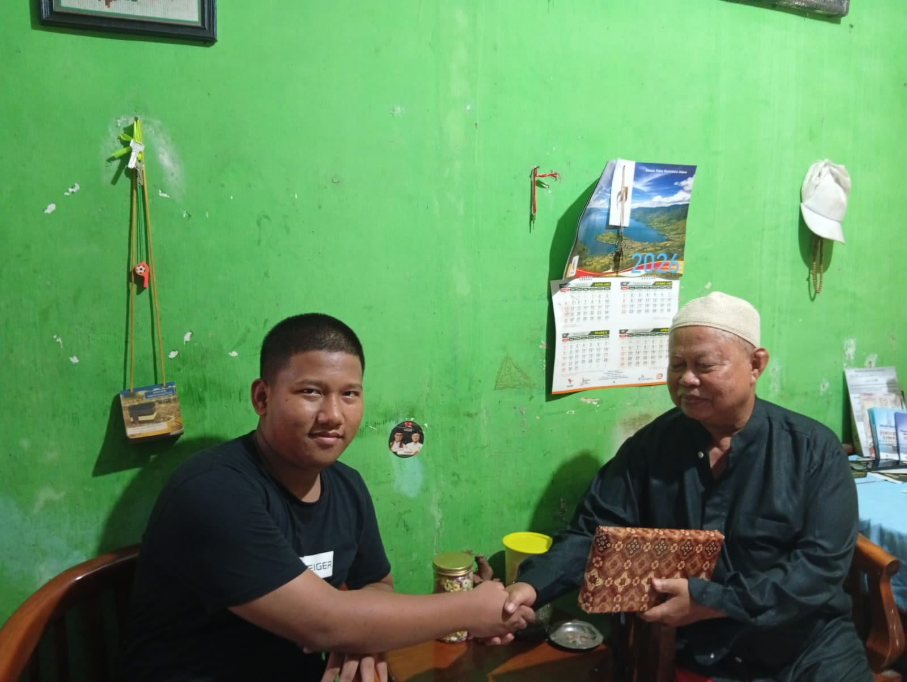
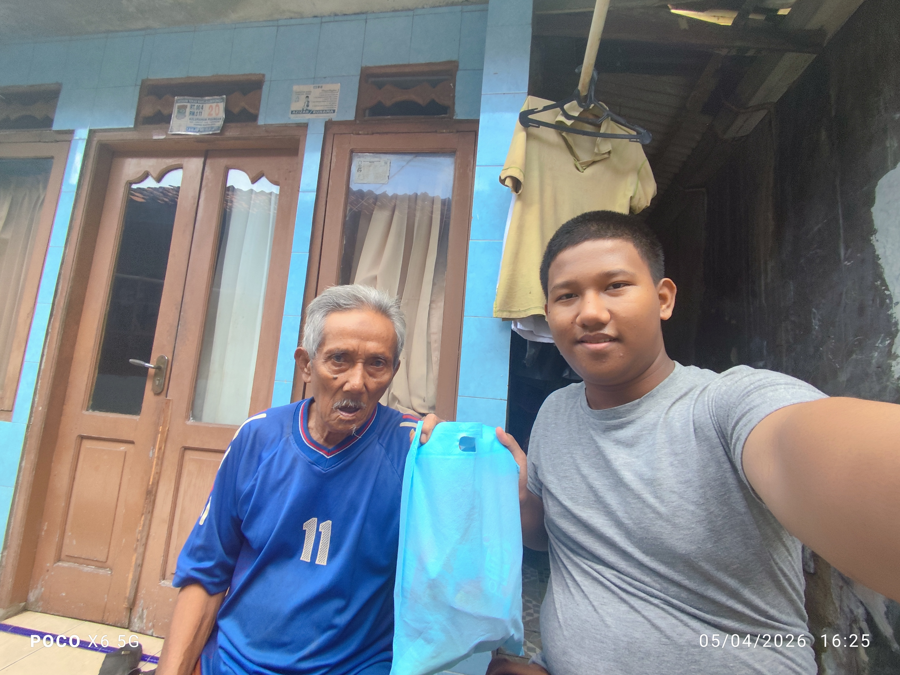
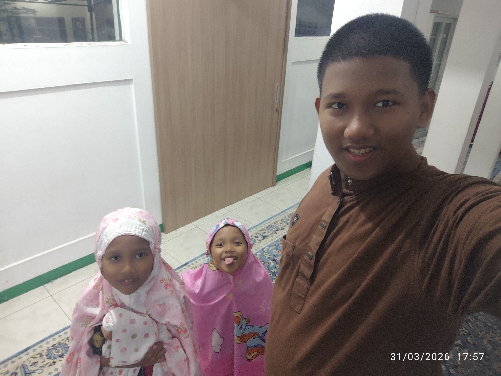
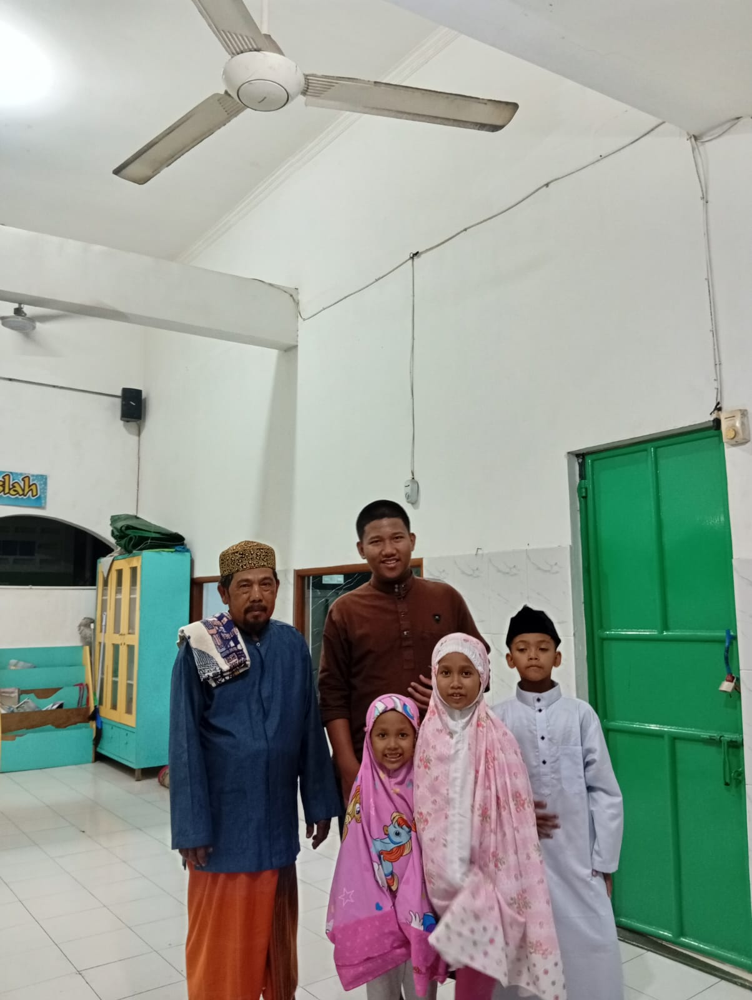
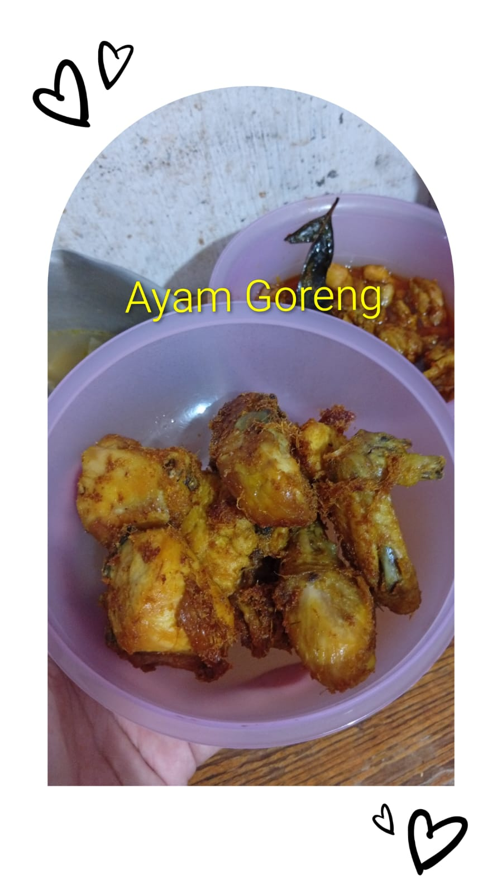
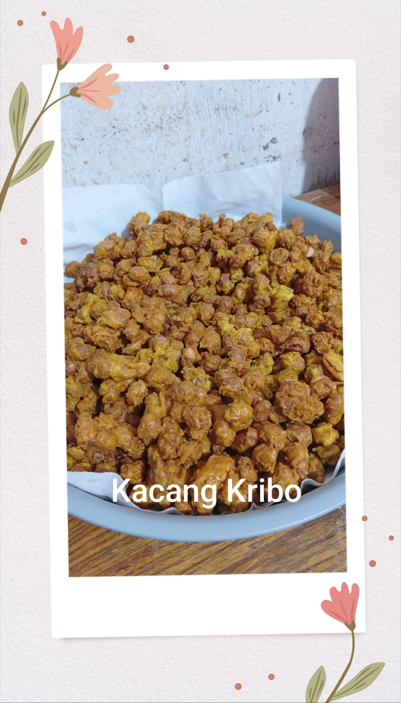
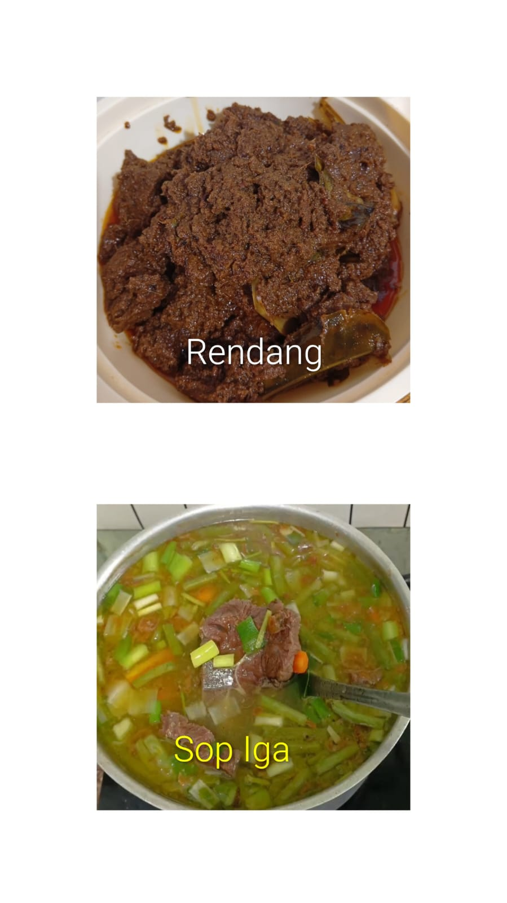

Projects
Bersih Masjid
Kegiatan membersihkan masjid bersama teman-teman.

Berbagi Sesama
Berbagi makanan untuk yang membutuhkan.



Mari Berjamaah
Ajakan untuk sholat berjamaah di masjid.




Dakwah Kebaikan
Kegiatan dakwah Nasihat Seputar Idul Fitri.


Pesan Untukmu
Bersilaturahmi dengan orang yang lebih tua untuk diberikan nasihat.
Santri On Kitchen
Memasak makanan untuk keluarga



Berbagi Ilmu
Mengajar Ilmu Yang bermanfaat kepada orang lain

Refleksi Ramadhan
Membuat Video Sharing berisi kesan Ramadhan dan Idul fitri
Duduk Untuk Ilmu
Menghadiri Kajian Ilmu Di masjid
Foto Tidak Tersedia, karena tidak difoto/belum tau ketika awal ramadhan dan saya sering mendengarnya ketika tarawih ( Kecuali 15 keatas)
My Journey
Mengisi,menjalankan jurnal harian selama liburan